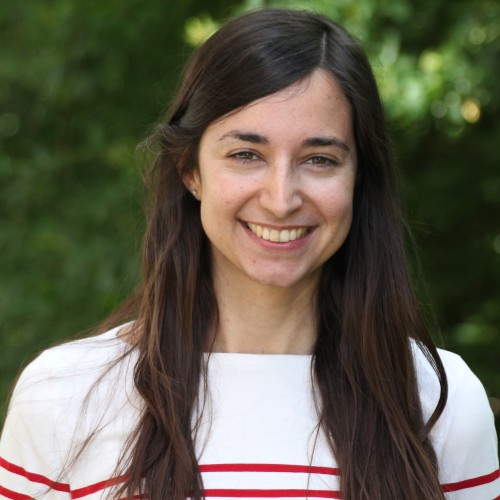
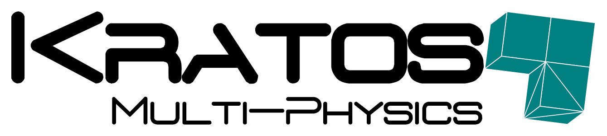

Computational Simulation Lab Workshop 2026 · TUM
7 Oct 2026

Hello! I’m an Assistant Professor in the Department of Applied Mathematics at the University of Alicante (UA), Spain.
My research focuses on computational fluid and solid mechanics and the development of numerical methods for complex, highly dynamic phenomena. My work includes viscoelastic flows, fluid–structure interaction, and the Material Point Method (MPM), with applications ranging from hemodynamics to landslides, avalanches, and extreme hydrological events.
Although my research primarily addresses engineering applications, I am not an engineer by training. I studied Mathematics at the University of Alicante and specialized in mathematical modeling and numerical simulation. During my PhD at the Universitat Politècnica de Catalunya, I worked on highly elastic viscoelastic flows. I later joined the University of Padua and TU Braunschweig as a postdoctoral researcher, where I expanded my research towards MPM and extreme-event simulation.
I have always found it almost magical that mathematical equations can describe physical processes with such remarkable accuracy. That sense of wonder drives my curiosity about phenomena that initially seem too complex to predict. What I enjoy most is the entire journey: from mathematical formulation to computational implementation, and finally… seeing the physical behavior emerge in a simulation.
As an educator, I want my students to see that mathematics is not separate from everyday life: it is one of the languages we use to understand the world around us. I teach calculus across several engineering degrees, including aerospace and telecommunications, and I try to show that ideas which initially seem abstract or intimidating become much more approachable when connected to physical phenomena and real engineering problems.
I also contribute as a developer to Kratos Multiphysics, an open-source C++ and Python framework for advanced computational mechanics.

Departamento de Matemática Aplicada e Ingeniería Aeroespacial (Escuela Politécnica Superior),
Ctra. San Vicente s/n,
03690 San Vicente del Raseig, Alicante, Spain